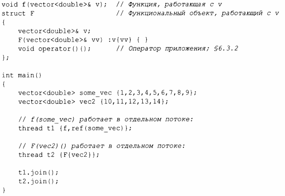

⇐15.2 Задания и потоки 15.4 Возврат результатов⇒
Как правило, для работы заданию требуются данные. Мы можем легко передавать их (или указатели, или ссылки на данные) в качестве аргументов. Рассмотрим следующий код:
Очевидно, что F{vec2} сохраняет ссылку на вектор-аргумент в F. Теперь F может использовать этот вектор, и, будем надеяться, никакая другая задача не будет обращаться к vec2, пока выполняется F (передача vec2 по значению устраняет этот риск).
Инициализация с помощью {f, ref(sorne_vec)} использует конструктор шаблона thread с переменным количеством аргументов, который может принимать произвольную последовательность аргументов (§7.4). ref () - это функция типа из <f unctional>, которая, к сожалению, необходима для того, чтобы шаблон переменной рассматривал some_vec как ссылку, а не как объект. Без ref () аргумент sorne vec будет передаваться по значению. Компилятор проверяет, может ли первый аргумент быть вызван с переданными аргументами, и создает необходимый функциональный объект для передачи потоку. Таким образом, если F::operator () () и f () выполняют один и тот же алгоритм, то работа двух заданий грубо эквивалентна: в обоих случаях создается функциональный объект для выполнения thread.